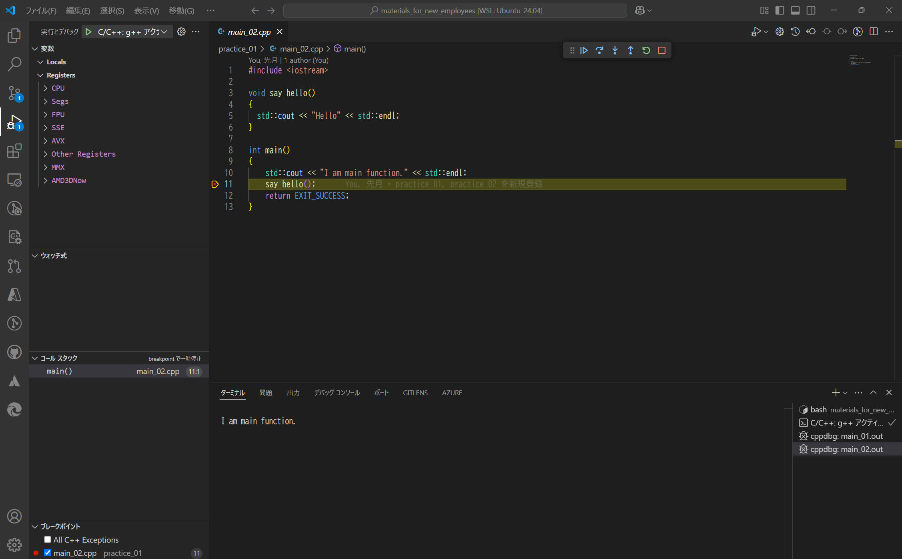

"Visual Studio Code" の launch.json, settings.json, tasks.json などについて調べた内容をこちらに記載します。
Visual Studio Code でのファイル launch.json, settings.json, tasks.json は、それぞれ異なる目的の設定ファイルです。
| ファイル | 説明 |
|---|---|
| launch.json | これはデバッグ設定ファイルです。プロジェクトでデバッグを行う際に、このファイルでデバッグの構成を設定します。たとえば、どのプログラムをデバッグするか、どのポートで通信するかなどが記述されます。デバッグ構成を複数定義して、選択的に使用することも可能です。 |
| settings.json | これはエディター全体やプロジェクト固有の設定を保存するファイルです。たとえば、フォントのサイズやテーマ、エディターの自動整列、プロジェクトごとの特別な設定などをカスタマイズするために使用されます。ユーザー全体の設定とワークスペース固有の設定が区別されています。 |
| tasks.json | これはビルドやその他のタスクの設定ファイルです。このファイルを使って、ビルドの自動化や特定のコマンドの実行を設定できます。例えば、「コードをコンパイルしてエラーを確認する」というタスクを簡単に実行できるようになります。 |
[Ctrl + Shift + B]でビルド、[F5]でデバッグ開始、をそれぞれできるようにします。
vscode 上でブレークポイントを設定し、変数やレジスタの内容を vscode 画面上で確認することができます。

| コンパイラ : | g++/gdb (Ubuntu 13.3.0-6ubuntu2~24.04) 13.3.0 | |
| OS : | Ubuntu 24.04.2 LTS (WSL) | |
tasks.json, launch.json ファイルを以下のように設定することで実現できます。
c++プログラムをビルドするためのtasks.jsonファイルを作成します。以下はg++を使用したビルドの例です。
私の趣味でビルド結果である実行ファイル拡張子を .out としていますが、ここ（.out）は削除しても問題ありません。
{
"tasks": [
{
"type": "cppbuild",
"label": "C/C++: g++ アクティブなファイルのビルド",
"command": "/usr/bin/g++",
"args": [
"-fdiagnostics-color=always",
"-g",
"${file}",
"-o",
"${fileDirname}/${fileBasenameNoExtension}.out"
],
"options": {
"cwd": "${fileDirname}"
},
"problemMatcher": [
"$gcc"
],
"group": {
"kind": "build",
"isDefault": true
}
}
],
"version": "2.0.0"
}
デバッグ用にlaunch.jsonを設定します。以下はgdbを使った例です。
{
"version": "0.2.0",
"configurations": [
{
"name": "C/C++: g++ アクティブ ファイルのビルドとデバッグ",
"type": "cppdbg",
"request": "launch",
"program": "${fileDirname}/${fileBasenameNoExtension}.out",
"args": [],
"stopAtEntry": false,
"cwd": "${fileDirname}",
"environment": [],
"externalConsole": false,
"MIMode": "gdb",
"setupCommands": [
{
"description": "gdb の再フォーマットを有効にする",
"text": "-enable-pretty-printing",
"ignoreFailures": true
},
{
"description": "逆アセンブリ フレーバーを Intel に設定",
"text": "-gdb-set disassembly-flavor intel",
"ignoreFailures": true
}
],
"miDebuggerPath": "/usr/bin/gdb"
}
]
}
[F5]でビルドまで実施する場合は下記のように１行追加します。
ここに記載のラベル名（"C/C++: g++ アクティブなファイルのビルド" ）は tasks.json の "label" と完全一致する必要があります。
{
"version": "0.2.0",
"configurations": [
{
"name": "C/C++: g++ アクティブ ファイルのビルドとデバッグ",
"type": "cppdbg",
"request": "launch",
"program": "${fileDirname}/${fileBasenameNoExtension}.out",
"args": [],
"stopAtEntry": false,
"cwd": "${fileDirname}",
"environment": [],
"externalConsole": false,
"MIMode": "gdb",
"setupCommands": [
{
"description": "gdb の再フォーマットを有効にする",
"text": "-enable-pretty-printing",
"ignoreFailures": true
},
{
"description": "逆アセンブリ フレーバーを Intel に設定",
"text": "-gdb-set disassembly-flavor intel",
"ignoreFailures": true
}
],
"preLaunchTask": "C/C++: g++ アクティブなファイルのビルド",
"miDebuggerPath": "/usr/bin/gdb"
}
]
}
本ページの情報は、特記無い限り下記 MIT ライセンスで提供されます。
| 2025-06-03 | - | 新規作成 |